01 · START
Starter
AI·AX 도입 가능성 진단
- 온보딩
- 2A4 문제정의
- Evidence 정리
- 1차 로드맵
진단형 컨설팅
FDE가 고객의 고유한 문제를 발견하고 해결한 경험을 플랫폼 자산과 SaaS 기능, 산업별 패키지, 교육·컨설팅 상품으로 확장하는 제품화 설계 가이드입니다.
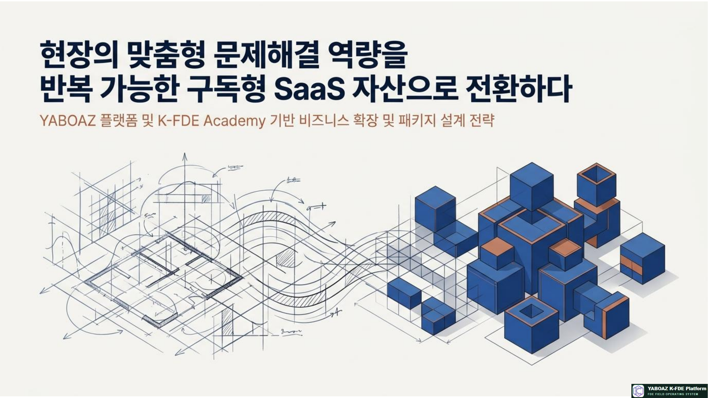
FDE는 맥락과 문제 해결의 깊이를 만들고, SaaS는 검증된 구조를 여러 고객이 설정해 쓸 수 있게 만듭니다. YABOAZ의 제품화는 맞춤형 실행과 표준 기능을 분리하면서도 하나의 플라이휠로 연결합니다.
현장 관찰·인터뷰·구조화·맞춤 설계
온톨로지·규칙·Agent·워크플로 재사용
설정·권한·로그·대시보드·구독
성숙도·산업·성과 기준의 도입 경로
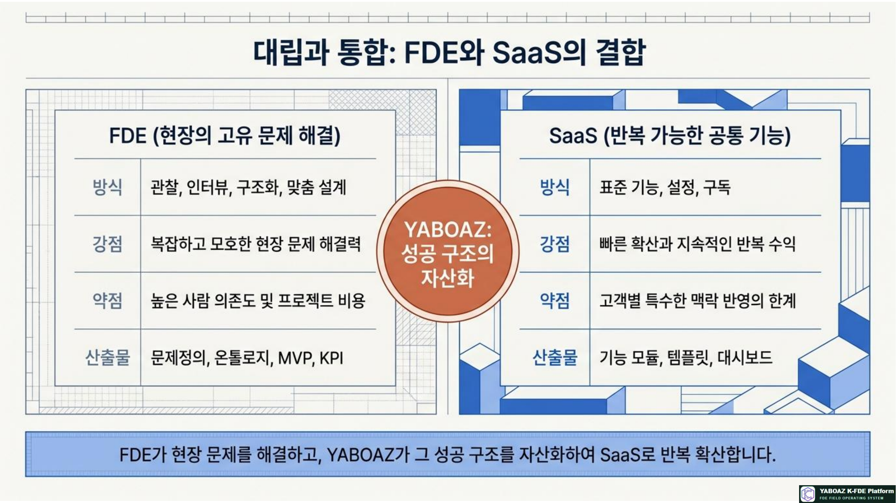
| 기준 | 확인 질문 | 제품화 신호 |
|---|---|---|
| 반복성 | 여러 고객이 같은 문제를 겪는가? | 유사 프로젝트에서 반복되는 병목 |
| 설정 가능성 | 고객별 차이를 옵션으로 처리할 수 있는가? | 규칙·역할·화면·KPI를 설정값으로 분리 |
| 데이터 표준화 | 공통 객체와 필드로 담을 수 있는가? | 온톨로지 공통 코어와 산업별 확장 |
| 위험 통제 | 권한·Human Gate·감사로 통제 가능한가? | 고위험 실행은 사람 승인 후 수행 |
| 성과·수익성 | KPI와 과금 가치가 설명되는가? | 시간 단축·오류 감소·구독 가치 입증 |
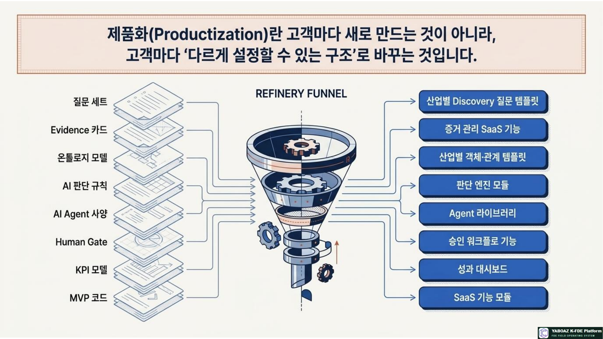
고객·프로젝트·13단계 진행 관리
출처·신뢰도·보안 등급·증거 카드 관리
2A4 문제·원인·목표·범위 구조화
객체·속성·관계·상태·이벤트·규칙·행동 설계
판단 질문·근거·신뢰도·Human Gate 구성
역할·도구·권한·금지 행동·실패 처리
승인·예외·알림·에스컬레이션·로그
기준선·Bootcamp·개선율·채택률 측정
등급·버전·재사용 조건·SaaS 후보 관리
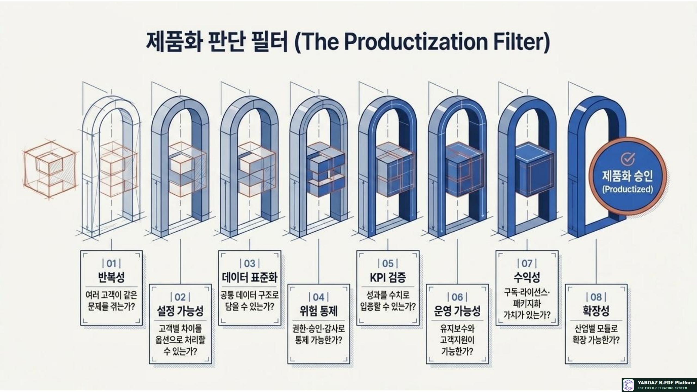
고객의 준비도에 맞춰 작은 진입에서 전사 확산까지 이어지는 계단형 상품입니다.
AI·AX 도입 가능성 진단
현장 문제를 실제 근거로 구조화
핵심 문제 하나를 작동 구조로 구현
현장 성과와 사용자 수용성 검증
검증된 구조를 조직과 지점으로 확산
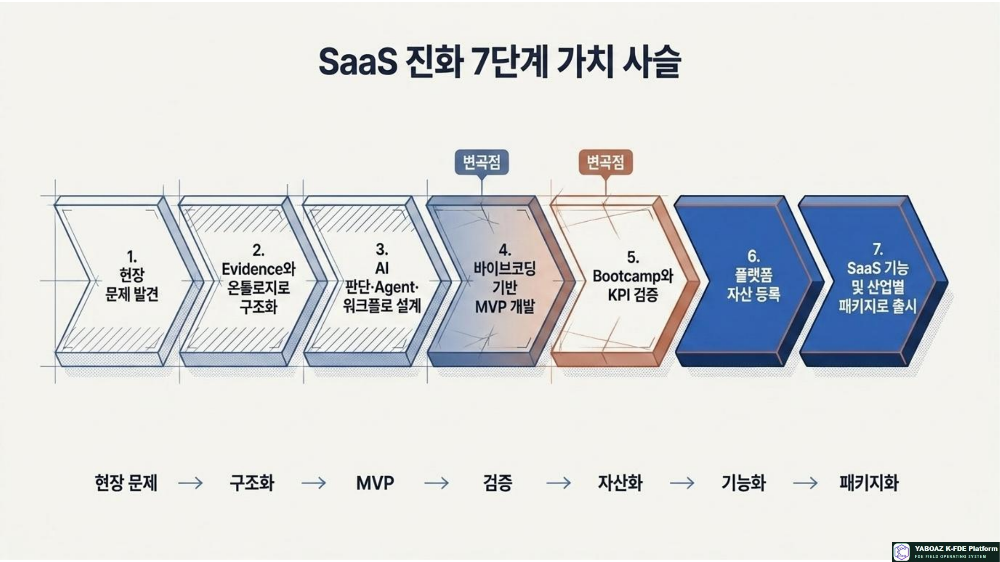
| 패키지 | 대상 | 구성 | 남는 자산 |
|---|---|---|---|
| FDE Basic | 입문자·전환 희망자 | 기초 개념·3권 교재·온라인 실습 | 개인 학습 포트폴리오 |
| FDE Practice | 실무자 | FireNavi·AI-Men·13단계 산출물 | 사례 기반 Evidence·온톨로지 |
| FDE Project | 기업 교육생 | 실제 기업 문제 기반 MVP·코칭 | 기업 프로젝트 자산 |
| Corporate Lab | 기업·기관 | 내부 FDE 양성 + YABOAZ 도입 | 조직 표준·자산 라이브러리 |
| Industry Pack | 산업별 고객 | 재난안전·제조·병원·금융 등 모듈 | 산업별 Agent·워크플로 |
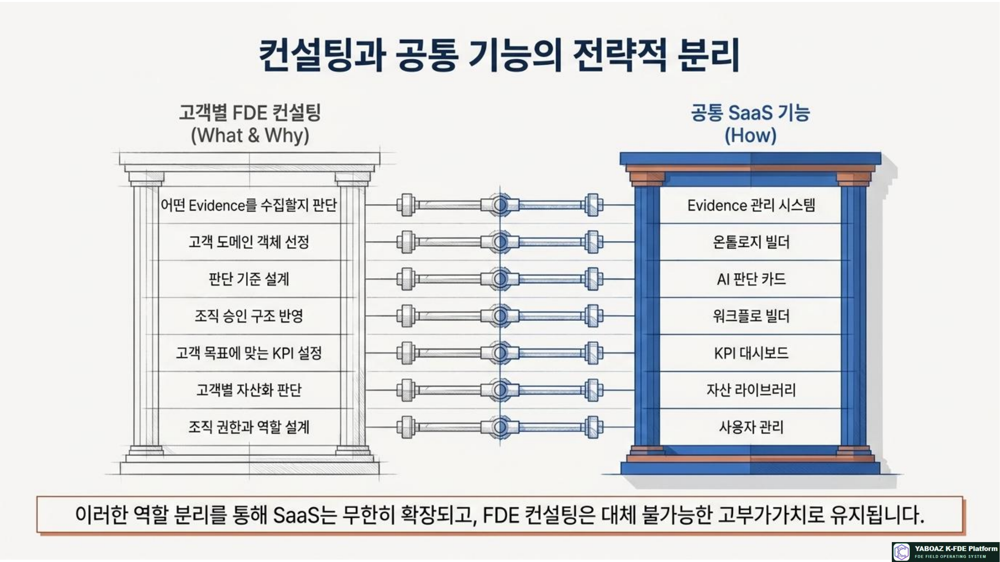
Starter, FDE Basic, 인증
Discovery, MVP, Bootcamp
Scale, 산업별 SaaS 패키지
템플릿 접근·교육·운영지원
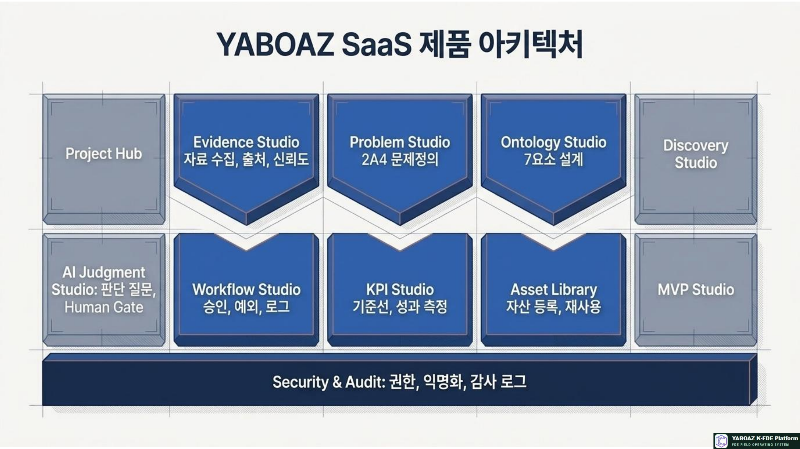
자산이 생겼다는 이유만으로 SaaS 기능으로 만들지 않습니다. 반복성·설정 가능성·데이터 표준화·통제·KPI·운영성을 단계적으로 확인합니다.
| 단계 | 상태 | 판정 기준 | 다음 조치 |
|---|---|---|---|
| 0. 아이디어 | 가설 | 현장 문제나 반복 수요가 아직 확인되지 않음 | Discovery와 Evidence 수집 |
| 1. 프로젝트 구조 | 맞춤형 | 한 고객의 문제를 해결하는 온톨로지·워크플로 존재 | MVP와 KPI 설계 |
| 2. MVP 검증 | 제한적 재사용 | Bootcamp에서 사용자·KPI 효과가 확인됨 | 자산 등록·사용 조건 정의 |
| 3. 템플릿 | 유사 고객 적용 | 고객별 차이를 설정값으로 분리 | 산업 패키지 설계 |
| 4. 모듈 | SaaS 후보 | 공통 데이터·권한·로그·과금 구조가 있음 | 제품 모듈 개발·운영 |
| 5. 표준 제품 | 반복 판매 | 복수 프로젝트·산업에서 성과와 유지보수 검증 | Scale·파트너·라이선스 확장 |
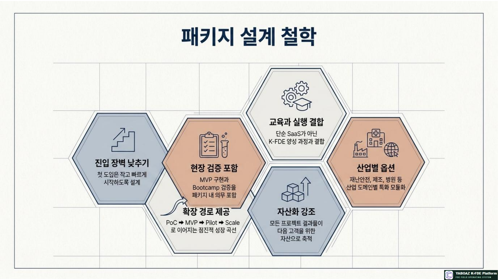
| FDE 산출물 | 제품화 형태 | 고객 설정 항목 | 표준화할 KPI |
|---|---|---|---|
| Evidence 카드 | Evidence Studio | 자료 유형·보안 등급·출처 필드 | 자료 등록률·출처 완전성 |
| 2A4 문제정의 | Problem Studio | 산업 용어·문제 유형·목표 KPI | 문제정의 완료시간·재정의율 |
| 온톨로지 7요소 | Ontology Builder | 객체·관계·상태·규칙 템플릿 | 모델 완성도·재사용률 |
| AI 판단 카드 | Judgment Studio | 입력 데이터·임계값·신뢰도·Human Gate | 정확도·채택률·수정률 |
| Agent 사양서 | Agent Registry | 역할·API·권한·금지 행동 | 실행 성공률·오류율·권한 위반 |
| 워크플로 | Workflow Builder | 승인자·SLA·예외·알림 채널 | 처리시간·승인시간·SLA |
| Bootcamp 보고서 | KPI & Validation | 기준선·시나리오·통과 기준 | 개선율·사용자 만족도 |
| 자산 카드 | Asset Library | 등급·버전·적용 산업·제한 | 재사용률·자산당 절감시간 |
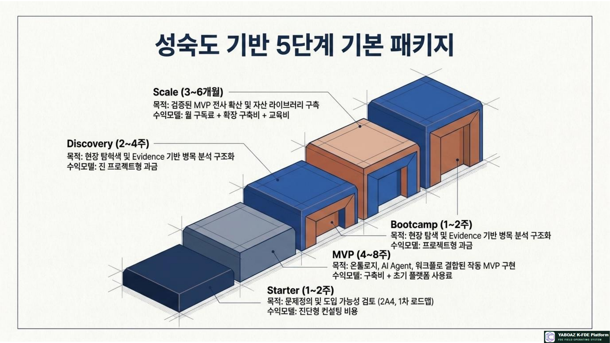
| 고객 상태 | 고객의 질문 | 권장 패키지 | 성공 기준 |
|---|---|---|---|
| 문제가 모호함 | 어디에 AI를 써야 하는가? | Starter | 실행 가능한 문제 후보와 로드맵 |
| 병목은 보이나 데이터가 흩어짐 | 현장에서 실제로 무슨 일이 일어나는가? | Discovery | Evidence·병목·온톨로지 후보 |
| 핵심 문제와 사용자가 명확함 | 작게 만들어 실제로 써볼 수 있는가? | MVP | 작동 화면·AI 판단·Human Gate |
| MVP가 있지만 성과가 불명확함 | 효과가 기존 방식보다 나은가? | Bootcamp | 기준선·KPI·개선 백로그 |
| 한 부서에서 효과가 확인됨 | 다른 부서·지점에도 확산할 수 있는가? | Scale | 운영 표준·교육·자산 라이브러리 |
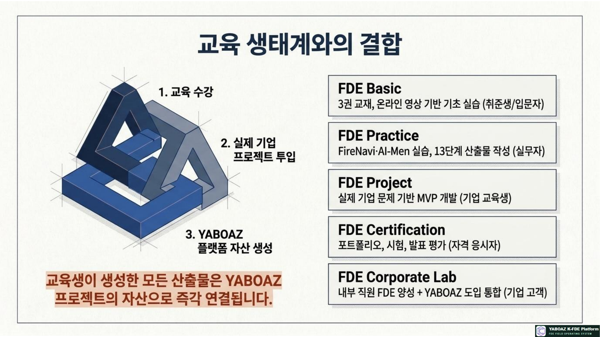
위험도 판단·경로 추천·대피 승인·감사 로그. 고위험 실행은 Human Gate 필수.
설비-센서 온톨로지·이상 감지·정비 우선순위·가동률 KPI.
상담 분류·예약 보조·민감정보 마스킹·상담자 확인.
문서 요약·위험 신호·심사 보조·금지 판단·감사 체계.
문의 분류·답변 초안·담당자 배정·고객 만족도.
협력사 평가·외부 위험 감지·대체 공급사·구매 승인.
민원 분류·긴급도·부서 배정·투명한 처리 로그.
학습 진단·피드백·인증 평가·교육 KPI.
기업 내부 인재 양성·실제 프로젝트·자산 라이브러리 구축.
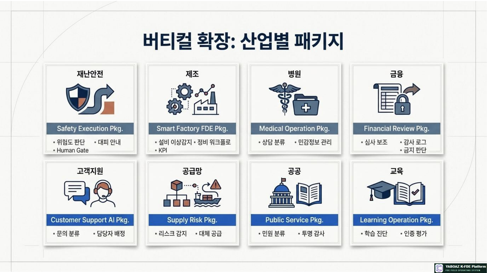
| 수익원 | 과금 기준 | 고객이 구매하는 가치 | 운영 주의점 |
|---|---|---|---|
| 진단비 | 진단 프로젝트 | 문제 선택과 적용 가능성 판단 | 진단 결과를 다음 패키지와 연결 |
| 구축비 | Discovery·MVP·Bootcamp | 현장 맞춤 설계와 검증 | 범위·완료 기준·변경 요청 명확화 |
| 월 구독료 | 워크스페이스·모듈·사용자 | 플랫폼 지속 사용과 관리 | 기본 기능과 고급 설정 분리 |
| Agent 과금 | Agent 수·호출량·업무량 | 판단과 실행 자동화 | 고위험 실행과 API 비용 통제 |
| 라이브러리 | 산업·템플릿 접근 권한 | 검증된 자산으로 착수 시간 단축 | 등급·사용 조건·버전 제공 |
| 교육·인증 | 교육생·과정·심사 | FDE 인재와 포트폴리오 확보 | 수료가 아닌 산출물 평가 운영 |
| 운영지원 | SLA·리포트·개선 시간 | 운영 안정성과 지속 개선 | 제품 기능과 컨설팅 범위 분리 |
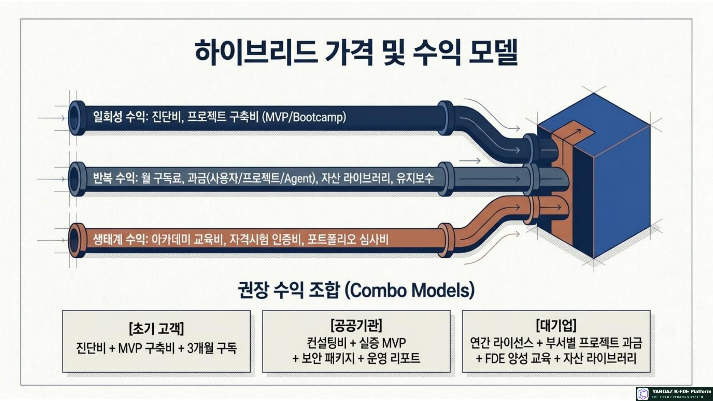
| 지표 | 정의 | 권장 확인 질문 |
|---|---|---|
| 자산→기능 전환율 | 제품화 후보 중 실제 모듈이 된 비율 | 공통 코어와 고객 설정이 분리되었는가? |
| Time to Value | 도입 시작부터 첫 KPI 개선까지 시간 | 고객이 언제부터 효과를 체감하는가? |
| 패키지 완료율 | 약속한 산출물·검증 기준 충족 비율 | 다음 패키지로 넘어갈 준비가 되었는가? |
| 재사용률 | 다음 프로젝트에서 다시 적용한 자산 비율 | 재사용이 실제 설계 시간을 줄였는가? |
| 구독 유지율 | 기간 종료 후 계속 사용하는 고객 비율 | 일회성 프로젝트가 운영 가치로 이어지는가? |
| FDE 생산성 | 자산 활용으로 프로젝트 착수·설계 시간 절감 | 새 FDE도 표준 자산을 활용할 수 있는가? |
| 고객 성과 | 고객 KPI 개선과 사용자 채택 | 기능이 아니라 업무 결과가 좋아졌는가? |
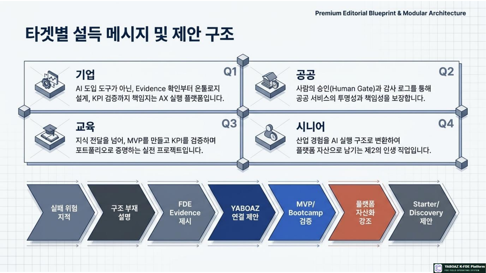
| 영업 단계 | 고객에게 보여줄 자료 | 다음 행동 |
|---|---|---|
| 관심 형성 | 산업별 실행 사례·문제 신호 | 진단 워크숍 제안 |
| 문제 합의 | 2A4·Evidence·기준선 계획 | Starter 계약 |
| 실행 설득 | 온톨로지·Agent·Human Gate 설계 | Discovery 또는 MVP 계약 |
| 성과 입증 | Bootcamp 테스트·KPI 대시보드 | Scale 의사결정 |
| 확산 | 운영 매뉴얼·자산 라이브러리·교육 계획 | 구독·연간 라이선스 |
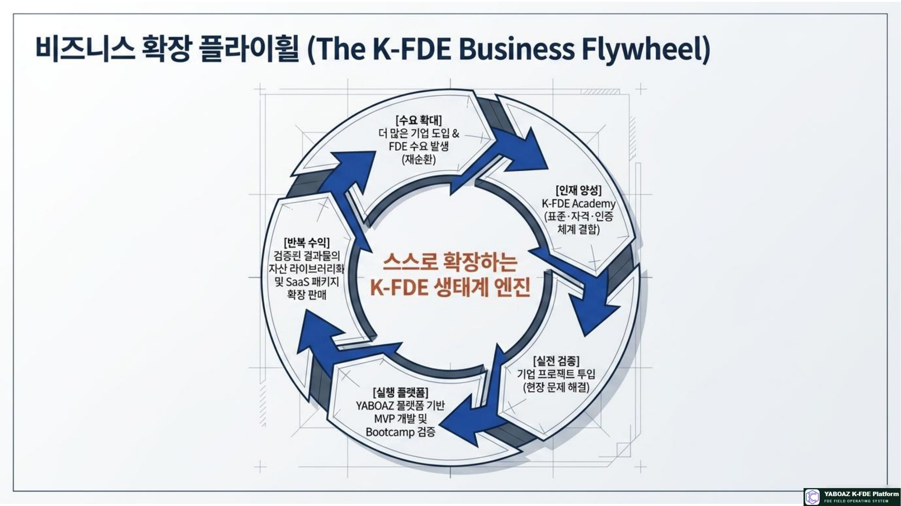
| 축 | 역할 | 서로 연결되는 결과 |
|---|---|---|
| K-FDE Academy | FDE 인재 양성·포트폴리오·인증 | 기업 프로젝트에 투입할 인재 풀 |
| FDE 컨설팅 | 고객 현장 문제·도메인 규칙·변화관리 | 고부가가치 맞춤 실행과 자산 후보 |
| YABOAZ SaaS | Evidence·온톨로지·Agent·Workflow·KPI 저장·실행 | 반복 사용 가능한 공통 플랫폼 |
| Asset Library | 검증된 템플릿·규칙·사례·패키지 재사용 | 착수 시간 단축과 품질 표준화 |
| 기업 프로젝트 | 현장 검증과 유료 도입 | 새로운 KPI·자산·산업 패키지 |
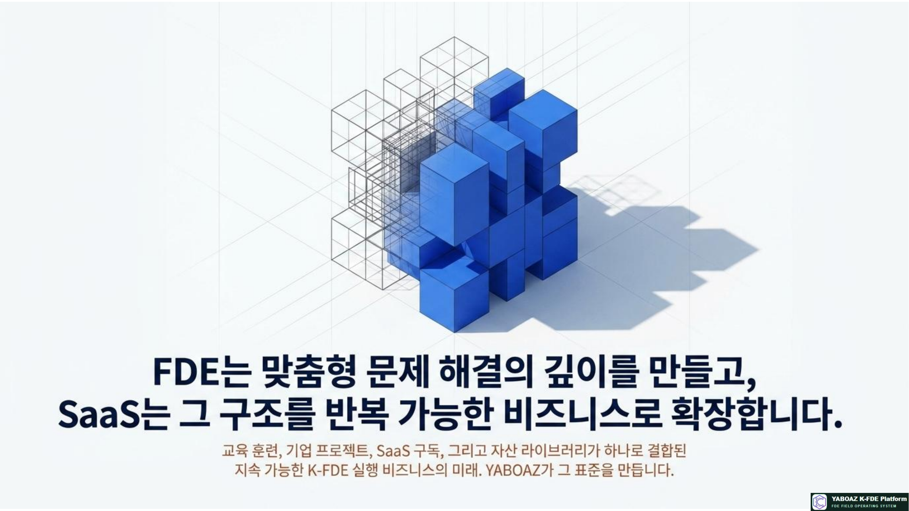
| 시간 | 실습 내용 | 산출물 |
|---|---|---|
| 30분 | FDE와 SaaS의 역할 차이 | 맞춤·공통 기능 구분표 |
| 40분 | 자산 후보와 제품화 성숙도 진단 | 제품화 판정표 |
| 40분 | SaaS 기능 모듈 설계 | 모듈 목록·설정 항목 |
| 40분 | Starter~Scale 패키지 구성 | 패키지 카드 |
| 30분 | 가격·수익모델 작성 | 가격 모델 |
| 30분 | 영업 제안과 도입 로드맵 | 제안 메시지·로드맵 |
| 40분 | 성과·제품화 KPI 설계 | KPI 대시보드 초안 |
| 40분 | 발표와 피드백 | 개선 백로그 |